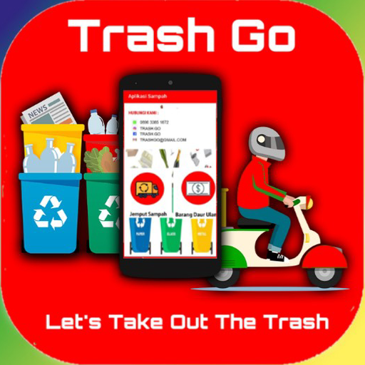

Bagikan :

Dampak dari PSBB (Pembatasan Sosial Berskala Besar) di Jakarta
mengakibatkan Industri Sampah kesulitan dalam mengambil sampah, dikarenakan ada beberapa orang yang takut
keluar rumah untuk membantu dalam pembuangan sampah. Warga juga banyak mengeluh dikarenakan Petugas sampah
tidak sesuai dengan waktu yang ditetapkan untuk datang ke Rumah Warga.
Banyak sekali permasalahan yang timbul dalam pendistribusian Sampah Warga.
Oleh karena itu, dari semua permasalah pendistribusian sampah,
Bank Sampah memperkenalkan aplikasi, nama aplikasinya adalah: "GoTrash".
Apa si GoTrash ?
Jadi GoTrash adalah aplikasi online yang fungsinya untuk mempermudah
pendistribusian sampah, baik itu dari pihak Petugas Sampah maupun Konsumen (Warga).
Keuntungan Konsumen (warga) :
1. Konsumen tidak perlu menunggu datangnya petugas Sampah
2. Apabila butuh sampahnya untuk diambil oleh Petugas Sampah, Konsumen cukup buka Aplikasi GoTrash, dan Pesan Petugas Sampah, maka Petugas sampah akan datang
3. Konsumen (warga) tidak perlu keluar rumah untuk memastikan sampah sudha dibuat atau belum
4. Tidak ada kontak fisi antara Petugas dan Konsumen
Apabila Anda tertarik dengan aplkasi ini, silahkan bisa didownload di link berikut Aplikasi GoTrash
Silahkan lihat informasi lainnya disini